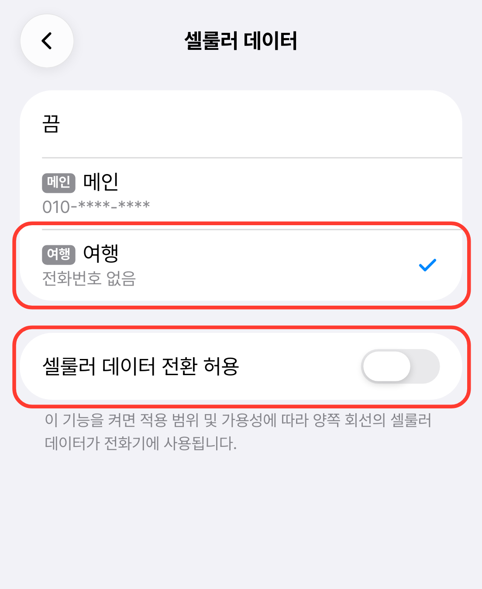

Install check · iOS
아이폰 eSIM 설치 확인
현지에 도착해 여행용 eSIM을 켠 뒤, 아래 화면과 비교해 확인해 주세요.
설치 방법은
아이폰 설치 가이드에서 볼 수 있어요.
화면의 빨간 테두리가 확인할 곳이에요.
셀룰러 화면
설정 › 셀룰러를 열어 세 가지를 확인해요.
- 셀룰러 데이터가 여행용 회선이에요.
- SIMs의 메인과 여행용 회선이 모두 켬이에요.
- 기본 음성 회선은 메인이에요.
여행용 회선 이름은 폰이 붙여요. ‘여행’ · ‘보조’처럼 폰마다 달라도 괜찮아요.
한국에서는 여행용 회선이 ‘활성화 중…’으로 보이고 셀룰러 데이터는 메인이에요. 정상이에요.
다른 여행용 eSIM이 더 보이나요? 이번에 설치한 것 말고 다른 여행용 eSIM은 꺼 두세요. 지우지 않아도 돼요.
어느 회선인지 모르겠으면 지우지 말고 고객센터로 문의해 주세요. 한 번 지운 eSIM은 다시 설치할 수 없어요.
여행용 회선 설정
셀룰러 화면에서 여행용 회선을 눌러 세부 화면을 열어요.
- 이 회선 켜기가 켜져 있어요.
- 음성 및 데이터는 5G 자동이에요.
- 데이터 로밍이 켜져 있어요. 가장 중요해요.
셀룰러 데이터
설정 › 셀룰러 › 셀룰러 데이터를 열어요.
- 여행용 회선에 체크 표시가 있어요.
- 셀룰러 데이터 전환 허용은 꺼져 있어요.

한국 회선의 데이터 로밍은 꺼 두세요. 켜져 있으면 통신사 로밍 요금이 나올 수 있어요.
셀룰러 데이터 전환 허용도 꺼 두세요. 켜 두면 데이터가 한국 회선으로 넘어갈 수 있어요.
신호 표시
화면 맨 위 상태 표시줄을 봐요.
- 신호 표시가 위아래 두 칸으로 나뉘어 있어요.
- Wi-Fi를 끄면 신호 옆에 5G나 LTE가 떠요.
신호가 한 칸뿐인가요? 여행용 회선이 꺼져 있거나 설치되지 않은 거예요. 확인 1부터 다시 봐 주세요.
그래도 연결이 안 되나요?
연결이 불안정하면 현지 통신사를 바꿔 보세요.
카드 아이콘(📶)은 자리 표시 — 구현 때 heroicon그래도 해결되지 않으면 문의해 주세요
설정 화면을 캡처해 보내 주시면 더 빨리 도와드릴 수 있어요.
고객센터 전체 보기